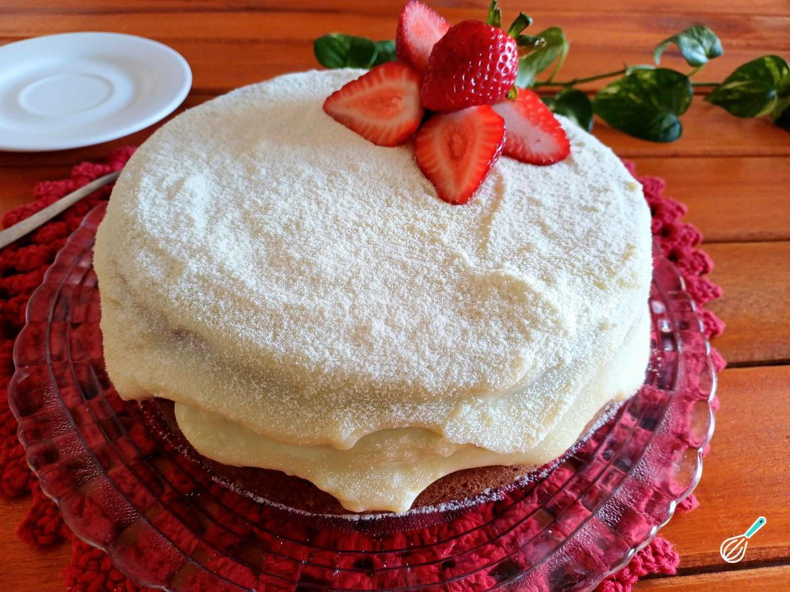

Bolo de Leite Ninho com Morango


Ingredientes
Massa
- 4 ovos
- 2 xícaras (chá) de açúcar
- 2 xícaras (chá) de farinha de trigo
- 1 xícara (chá) de leite quente
- 1 colher (sopa) de fermento em pó
Recheio e Cobertura
- 2 latas de leite condensado
- 2 caixas de creme de leite
- 8 colheres (sopa) de leite Ninho
- 2 colheres (sopa) de manteiga sem sal
- 2 bandejas de morangos frescos picados (e alguns inteiros para decorar)
- Leite Ninho a gosto para polvilhar
Modo de Preparo
Passo a passo
- Massa: Bata os ovos com o açúcar até dobrar de volume. Adicione a farinha e o leite quente aos poucos, misturando delicadamente. Por último, incorpore o fermento. Asse em forma untada a 180°C por cerca de 35 minutos.
- Creme de Ninho: Em uma panela, misture o leite condensado, o leite Ninho e a manteiga. Leve ao fogo baixo, mexendo sempre até desgrudar do fundo. Desligue o fogo, misture o creme de leite e deixe esfriar completamente.
- Montagem: Corte o bolo frio ao meio. Umedeça a massa, espalhe uma camada generosa do creme frio e distribua os morangos picados por cima.
- Finalização: Cubra com a outra metade do bolo, passe o restante do creme por toda a volta, polvilhe leite Ninho por cima e decore com os morangos inteiros.
Be sure to include relevant details.